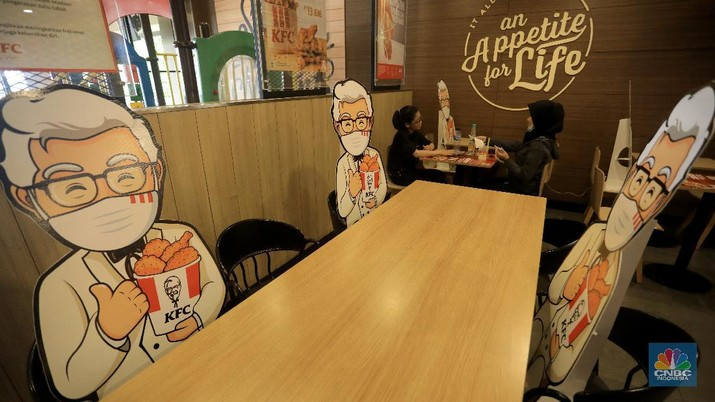

Social Distance for Hotel-Resto-Cafes Again Prepared
Posted APRIL 22 2020
Visitors to one of the 10 reopened Pret A Manger sandwich shops in London last week were confronted with a very different experience from just over a month ago.
Where lunchtime queues would usually stretch out of the door, only five or six people were allowed in at a time. Perspex screens separated customers and staff at till points, while markings on the floor signalled how close people could stand. The menu, which normally includes about 60 products, had been cut to 11 and was for takeaway only.
“Pret will be a very different operator,” admitted chief executive Pano Christou, adding that after coronavirus, footfall in its more than 500 UK outlets would be “a considerable step down”.
Pret is one of the first big food chains to tentatively restart part of its business, after governments across Europe imposed full lockdowns to slow the spread of coronavirus.
Burger King and KFC also opened a handful of their UK restaurants for takeaway and delivery last week, with similar measures in place to adhere to social distancing and stricter rules on cleanliness.
The closures of restaurants, cafés, cinemas and gyms are expected to last several weeks, if not months, longer. Operators in countries including the UK, France and Germany have been warned they will be among the last to exit lockdown. Alasdair Murdoch, Burger King’s UK chief executive, said the group’s “bear scenario” was a 24-week restriction, although he thought 12 weeks more likely.